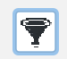
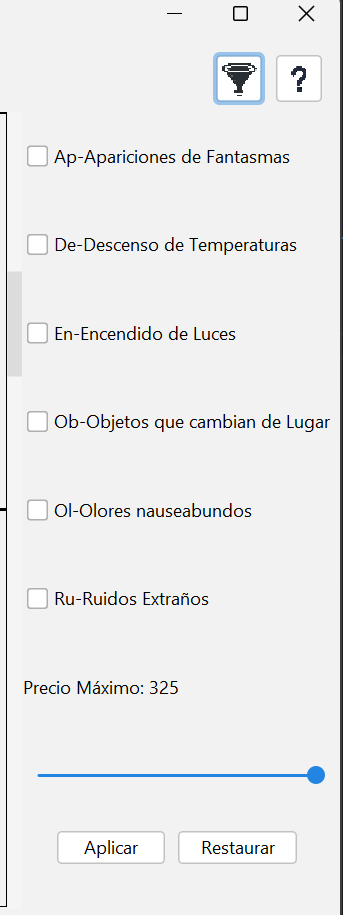

En la parte superior derecha de la ventana con la informacion de los castillos
Encontrará el siguiente boton:

Al clicar sobre este se abrirá el panel con todos los tipos de filtros

El filtro de permitirá seleccionar el precio máximo y los encantamientos, estos son los disponibles: